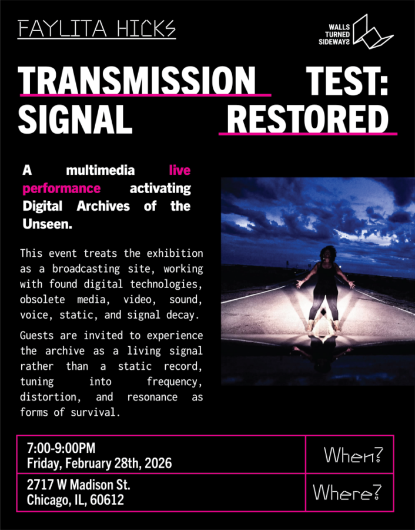

The Digital Archives of the Unseen: Transmission Test — Signal Restored
Interdisciplinary, interdimensional artist, writer, and ritual maker Faylita Hicks joins Walls Turned Sideways Gallery, a nationally recognized space centering art, justice, and incarceration, for Transmission Test: Signal Restored, a multimedia live performance activating Digital Archives of the Unseen.
This event treats the exhibition as a broadcasting site, working with found digital technologies, obsolete media, video, sound, voice, static, and signal decay. Poems function as transmissions—received, fractured, repeated, and restored across time and device—revealing how memory and testimony persist despite interruption and erasure.
Guests are invited to experience the archive as a living signal rather than a static record, tuning into frequency, distortion, and resonance as forms of survival.
RSVP here!